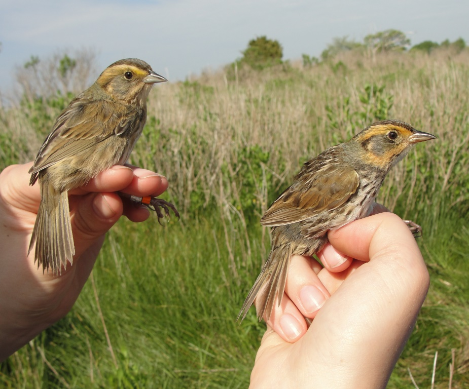

I Ejercicios I
I.1 Evaluación de distribución normal
Este documento tiene algunos ejercicios para evaluar si una distribución es normal. Los códigos (scripts) se encuentran en el archivo T8 La Distribución Normal.
Tema:
- construir un histograma de los datos
- sobreponer una distribución teórica sobre el histograma
- evaluar si los datos tienen una distribución normal usando qqplot
- evaluar se los datos tienen una distribución normal usando la prueba de Shaipro_Wilks y Anderson-Darling
I.1.1 Construir un histograma con los siguientes datos
- Usa el paquete ggversa, y el archivo SparrowsElphick y haga un histograma de los pesos (wt) de los pajaros capturados

Foto de : https://birdcallsradio.com/episode-097-chris-elphick/
| wingcrd | flatwing | tarsus | head | culmen | nalospi | wt | bandstat | initials | Year | Month | Day | Location | SpeciesCode | Sex | Age |
|---|---|---|---|---|---|---|---|---|---|---|---|---|---|---|---|
| 59.0 | 60.0 | 22.3 | 31.2 | 12.3 | 13.0 | 9.5 | 1 | 2 | 2002 | 9 | 19 | 4 | 1 | 0 | 2 |
| 54.0 | 55.0 | 20.3 | 28.3 | 10.8 | 7.8 | 12.2 | 1 | 2 | 2002 | 10 | 4 | 4 | 3 | 0 | 2 |
| 53.0 | 54.0 | 21.6 | 30.2 | 12.5 | 8.5 | 13.8 | 1 | 2 | 2002 | 10 | 4 | 4 | 3 | 0 | 2 |
| 55.0 | 56.0 | 19.7 | 30.4 | 12.1 | 8.3 | 13.8 | 1 | 8 | 2002 | 7 | 30 | 9 | 1 | 0 | 2 |
| 55.0 | 56.0 | 20.3 | 28.7 | 11.2 | 8.0 | 14.1 | 1 | 3 | 2002 | 10 | 4 | 4 | 3 | 0 | 2 |
| 53.5 | 54.5 | 20.8 | 30.6 | 12.8 | 8.6 | 14.8 | 1 | 7 | 2004 | 8 | 2 | 1 | 1 | 0 | 2 |
I.1.2 Constuye un histograma de la distribución de los pesos de los pajaros.
- las lineas blancas alrededor de las barras
- que se cambio el nombre del eje de “x”
- que se cambio el nombre del eje de “y”
Ahora a esta misma gráfica añádele la distribución normal teórica, el gráfico
I.1.3 QQPLOT
- Ahora haz un gráfico de qqplot y determina si la distribución de los datos de peso de los finches tienen una distribución normal.